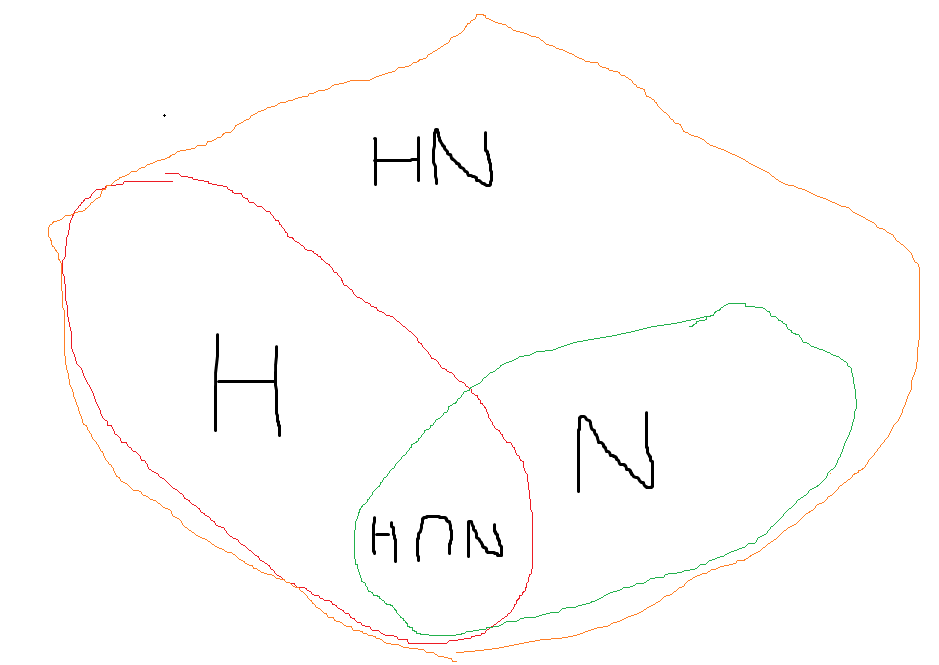

Isomorphism (同构) 将两个群画了一个“等号”，这两个群可能表示不同，但元素的运算关系全都相同。
定义：对两个群，如果存在双射, 使得对任意成立，则它们同构。写作
除了运算关系，当然群的阶也是相同的，再结合子群的阶是原来的群的阶的因子，可以证伪一些命题。
显然同构是一种等价关系，因此在讨论时，我们可以从同构的视角将不同的群分为不同的等价类。up to isomorphism意为在同构视角下研究。
当我们在研究陪集的时候会发现，对于，就像是一个双射函数一样，将中的所有元素映射到了另一个集合。下面我们用这个思想得到cayley's theorem。
我们将任何一个元素都能看成一个双射函数，而显然双射函数实质是一种permutation。容易证明确实是双射。
定义，易证是一个双射，其中是所有构成的permutation集合。
因此任何群都同构于一个permutation。
群不仅可以建立全等关系，也可以构成运算上的关系。若干群可以构成更高维的群，一个大的群也可以分解为若干群。
Cartesian product （笛卡儿积）也叫external direct product，是将若干群的元素直接构成一个多元组。
定义：对于群，，则笛卡儿积是由构成的群，运算为。
对于生成元，如果，它们的阶分别为，则的阶为。（用定义易证）
这就引出了笛卡尔积相关的一个等价关系：当且仅当。首先，如果lcm不为1，则根据上面的可以得出任意元素的阶都小于，因此不是循环群，但是循环群，于是不同构。
Internal direct product是这样的一种群，它可以拆成两个群，每个元素都可以表示为两个子群的元素的运算结果。
定义：如果一个群满足，且，，则称是的internal direct product
内直积和外直积有着很密切的关系。事实上，如果是的内直积，则
观察外直积和内直积的关系，一个是二元组，一个是运算，如果二元组与运算的结果是一一对应的，那么证明思路就有了。首先从运算结果入手，如果，则，根据知，则，所以运算结果是唯一对应于参与运算的两个元素的。
令，其中，根据上文这是良定义的函数。。证明双射很容易。
子群的左右陪集不一定相等，如果相等，则可以用于构建Factor Group。
定义：的子群如果满足，则是的正规子群。
在正规子群相关证明中，用的比较多的应该是，这可以用于证明某些具备固定性质的群是正规子群。
我们知道，一个子群可以确定一种等价关系，即，或者是。在10、11章节中我们往往需要证明一个陪集的操作不依赖于或这个符号，也就是说这个等价类里面每个元素拿出来进行运算的结果都必须是一样的，这在证明某个函数是良定义时非常重要。
Factor Group是这样一种群，它的集合元素构成的一个划分，且每个划分同势；它的运算和的运算很相似。
定义：有一个正规子群，的陪集构成一个群，运算为，群写做，阶为
我们需要证明此处的运算是良定义的。令，需要证明。易知，故存在 。。这里运用了陪集的性质与正规子群的定义。
没有非平凡正规子群的群称为Simple groups。书中对Alternating Groups 做出了讨论，并证明它是Simple group。要证明这个结论，主要的思路是：证明任意3-cycle属于子群时可以推到所有的其他元素，然后证明正规子群中的元素可以推出3-cycle。
首先，书中证明了中的任意元素可以写做若干3-cycle的乘积，这是通过转化一对transposition得到的。
其次，证明的含有3-cycle的子群一定是。这里将所有的3-cycle表示为的乘积，其中固定，任取。然后由于，所以所有形式的3-cycle都属于，因此所有3-cycle都属于，结合上一步即得证。
最后，将所有的even permutation分解，对其分类讨论，证明了包含非id的子群一定包含一个3-cycle，也就证明了最后的结论。
同态有点像线性代数里的一种降维映射，因为可能两个不同的元素会映射到同一个元素，所以就降维了。
定义：对群的Homomorphism是一个映射满足。
在中的值域被称为的Homomorphic image
同态有一个很重要的性质，与正规子群有关。如果一个集合在中是正规的，那么它在中的逆象也是正规的。
利用定义证明：是正规子群，逆象为，则，那么，，，故，故。这里也用到了性质
上述性质对应了一个重要的性质，即Kernel。
定义：是一个到的同态，则是的核。
核的性质很多，显然它是正规子群，此外比较重要的是它的势。一个核的陪集的所有元素都对应于同一个像，因此核的势就是中的所有非空逆象的势。
关于正规子群的陪集所确定的群，即Factor Group，实际上也构成了一种同态，也就是同一个等价类内的所有元素都映射到其对应的陪集。
定义：是的一个正规子群，则natural homomorphism (canonical homomorphism)为，。
此处的核是，是一个常用的结论。
这里的正规子群、陪集又和上面讲的核关系十分密切。一个所确定的核很明显满足，因为的所有陪集分别对应于一个像。因此就有了First Isomorphism Theorem：
如果是一个群同态，有核，取为Factor Group，则存在唯一的同构，。
事实上，由于同一个陪集里的元素对应于同一个像，这个函数是良定义的。，所以是一个同态，易证是双射。
Second Isomorphism Theorem:
是的一个子群，是的一个正规子群，则是的子群，是的正规子群，且。
并不是所有的两个子群进行内积运算都得到一个群，而正规子群使得形如中两个群的元素可以左右交换并替换为另一个中的元素，从而让和中的元素靠在一起得到它们中的元素。当然，其他性质也是如此得到。（）
对于，利用了群和正规子群的性质。，则由群的性质，，由正规子群的性质，，所以，得到了正规子群。
对于最后一个性质，感性的认知是这样的：

与的关系类似于与的关系。
令，，则，所以是群同态。结合同构第一定理，，此处即，即，即。而是否是呢？对任意，，故满射，。
因此得到了
Correspondence Theorem：
是的一个正规子群，所有包含的子群与的所有子群存在一个双射，且是正规子群当且仅当也是正规子群。
首先要证明的应当是映射是正确的，即确实是的一个子群。因此，设是的两个元素，由是子群知，故，所以是子群。
证明满射，只需要用定义即可，但单射需要一点技巧，主要是关于群的性质。如果，则对，，则存在使得，由于和中的元素都属于，所以其结果也属于，因此。因为中元素都属于，那么也属于，故，对称地有，故二者相等。
对于最后一个结论的充分性，用到了核的正规性。容易构造并证明同态，使得。这个同态的核即使得的元素，即所有满足的，所以就是，因此在中是正规子群。
而反过来的构造比较复杂，构造了同态与，因为是中的正规子群，所以这两个同态都是natural homomorphism，后者的核是，而使得的元素都属于，故同态的核是，所以是正规子群。
Third Isomorphism Theorem：
如果是群的正规子群且，则。
这个定理实际上在上一个证明过程中被证明了。最后的同态的核是，所以根据同构第一定理有